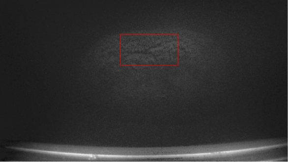

Personal Information
- University: Central South University
- College: College of Mechanical and Electric Engineering
- Major: Intelligent Manufacturing
- Degree: Bachelor of Engineering
- Expected Graduation: June 2026
- Average Score: 89.58/100
- Rank: 4th out of 24 students
Education Background
Central South University
Bachelor of Engineering in Intelligent Manufacturing
September 2022 – June 2026 (Expected)
Research Focus
My research interests lie in autonomous driving systems, integrating computer vision, machine learning, and deep learning. I am actively studying advanced machine learning techniques and eager to apply them to complex systems.
I have experience in optimizing imaging techniques and developing agricultural automation solutions. As a Research Assistant at the Deep-Sea Resource Exploration and Development Laboratory, I worked on restoring turbid underwater images of cobalt crusts using homomorphic filtering and polarization imaging.
Research Project Achievements:

Paper Abstract: Marine cobalt-rich crusts, extensively used in industries such as aerospace, automotive, and electronics, are crucial mineral resources located on the ocean floor...
Honors and Awards
- 2022-2023 Academic Year Scholarship - Central South University
- 15th China University Physics Academic Competition for Central South University - First Prize
- 11th Central South University Students Mechanical Innovation Design Competition - Second Prize
- Outstanding Student - Central South University (2023, 2024)
- 2023-2024 Academic Year Scholarship - Central South University
- Outstanding Individual in Mass Sports Activities - Central South University (2024)
- University Sports and Culture Festival - Second Prize
- 19th Mathematical Modeling Competition - Second Prize